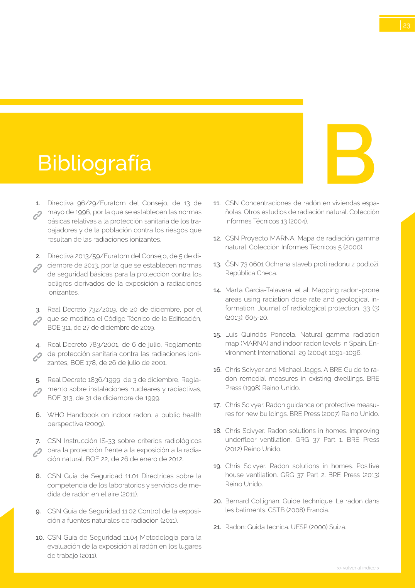

Guia de rehabilitacion frente al radon · edición sin-fecha · capa guia
Documento GUIA-PDF-23d2f2198c3b · SHA-256 del PDF 6765d0c34c51fbe193c3ed0c1378b710f98f086d16e2b68fc28ed36e143fdaea
Página física 23 de 24.
Copia fiel del PDF fuente · Fuente oficial
Ficha de la disposición en la fuente oficial
Créditos y autoría en el PDF fuente. Reproducción con cita de fuente y autores.
Permiso literal: Se permite la reproducción total o parcial del contenido de este do Edición actual: septiembre 2020 cumento siempre y cuando se cite la fuente original y a sus autores.
2
Este documento ha sido elaborado por el Instituto de ciencias
de la construcción Eduardo Torroja (IETcc) bajo la supervisión
de la Dirección General de Agenda Urbana y Arquitectura del
Ministerio de Transportes, Movilidad y Agenda Urbana (MITMA).
SECRETARÍA GENERAL DE
AGENDA URBANA Y VIVIENDA MINISTERIO GOBIERNO El IETcc, perteneciente al Consejo Superior de Investigaciones DE TRANSPORTES, MOVILIDAD
DE ESPAÑA Y AGENDA URBANA DIRECCIÓN GENERAL DE
AGENDA URBANA Y ARQUITECTURA Científicas (CSIC), es el centro de investigación en edificación
de referencia en España. La Unidad de Calidad en la Construc
ción del IETcc asesora al MITMA en la elaboración del Código
MINISTERIO GOBIERNO DE CIENCIA Técnico de la Edificación que, desde el año 2019, cuenta con la DE ESPAÑA E INNOVACIÓN
sección HS6 Protección frente a la exposición al radón.
Dirección y Coordinación:
Ministerio de Transportes, Movilidad y Agenda Urbana
Isabel Marcos Anasagasti
Esta publicación está formada por una serie de documentos cuyo Raquel Lara Campos
objetivo es constituir una herramienta de ayuda para el diseño de Eduardo González de Prado
soluciones de protección frente al radón: Instituto de ciencias de la construcción Eduardo Torroja CSIC
Pilar Linares Alemparte
■ Guía de rehabilitación frente al radón
Fichas de soluciones: Autoras:
Pilar Linares Alemparte
A: De aislamiento del edificio Sonia García Ortega
■ Solución A1. Barrera frente al radón
■ Solución A1-1. Barrera frente al radón. Encuentros Colaboradoras:
■ Solución A2. Sellado de fisuras, grietas, encuentros y juntas Virginia Sánchez Ramos
■ Solución A3. Puertas estancas Karina Angélica García Pardo
■ Solución A4. Creación de sobrepresión
Edita:
B: De reducción del radón antes de que penetre en los locales Centro de Publicaciones Secretaría General Técnica
a proteger Ministerio de Transportes, Movilidad y Agenda Urbana©
■ Solución B1. Ventilación del espacio de contención: cá Entidad colaboradora:
mara de aire Consejo Superior de Investigaciones Científicas · CSIC
■ Solución B2. Ventilación del espacio de contención: loca Ministerio de Ciencia e Innovación
les no habitables
■ Solución B3. Despresurización del terreno Catálogo de publicaciones de la Administración General
del Estado: publicacionesoficiales.boe.es
C: De reducción del radón tras penetrar en los locales a proteger
■ Solución C1. Ventilación de los locales habitables Centro virtual de publicaciones del Ministerio de Transpor
tes, Movilidad y Agenda Urbana: www.mitma.gob.es
Fichas de ejemplos:
Página web del Código Técnico de la Edificación:
■ Ejemplo A1+B3. Barrera frente al radón + despresurización www.codigotecnico.org
con red de tubos
■ Ejemplo A2+B1. Sellado + ventilación de la cámara sanitaria Maquetación y diseño gráfico:
■ Ejemplo A2+B3. Sellado + despresurización con red de tubos Lapizmente. Estrategia • Diseño Gráfico
■ Ejemplo A2+C1. Sellado + ventilación mecánica de los loca- Los contenidos o ideas recogidas en este documento pertenecen a
les habitables sus autores. Este documento está basado en el conocimiento dispo
nible en el momento de su publicación. No se aceptará por las institu
Publicación completa: ciones ni los autores implicados responsabilidad de ningún tipo por el
ISBN: 978-84-498-1045-9 uso de estas recomendaciones. Las figuras tienen carácter ilustrativo
NIPO: 796-20-136-5 y no deben interpretarse como detalles constructivos.
1ª edición: septiembre 2020 Se permite la reproducción total o parcial del contenido de este do
Edición actual: septiembre 2020 cumento siempre y cuando se cite la fuente original y a sus autores.
>> volver al índice >Formato: Texto de la página (Markdown)
B >> volver al índice > 23 1. Directiva 96/29/Euratom del Consejo, de 13 de mayo de 1996, por la que se establecen las normas básicas relativas a la protección sanitaria de los tra bajadores y de la población contra los riesgos que resultan de las radiaciones ionizantes. 2. Directiva 2013/59/Euratom del Consejo, de 5 de di ciembre de 2013, por la que se establecen normas de seguridad básicas para la protección contra los peligros derivados de la exposición a radiaciones ionizantes. 3. Real Decreto 732/2019, de 20 de diciembre, por el que se modifica el Código Técnico de la Edificación, BOE 311, de 27 de diciembre de 2019. 4. Real Decreto 783/2001, de 6 de julio, Reglamento de protección sanitaria contra las radiaciones ioni zantes, BOE 178, de 26 de julio de 2001. 5. Real Decreto 1836/1999, de 3 de diciembre, Regla mento sobre instalaciones nucleares y radiactivas, BOE 313, de 31 de diciembre de 1999. 6. WHO Handbook on indoor radon, a public health perspective (2009). 7. CSN Instrucción IS-33 sobre criterios radiológicos para la protección frente a la exposición a la radia ción natural. BOE 22, de 26 de enero de 2012. 8. CSN Guía de Seguridad 11.01 Directrices sobre la competencia de los laboratorios y servicios de me dida de radón en el aire (2011). 9. CSN Guía de Seguridad 11.02 Control de la exposi ción a fuentes naturales de radiación (2011). 10. CSN Guía de Seguridad 11.04 Metodología para la evaluación de la exposición al radón en los lugares de trabajo (2011). 11. CSN Concentraciones de radón en viviendas espa ñolas. Otros estudios de radiación natural. Colección Informes Técnicos 13 (2004). 12. CSN Proyecto MARNA. Mapa de radiación gamma natural. Colección Informes Técnicos 5 (2000). 13. ČSN 73 0601 Ochrana staveb proti radonu z podloží. República Checa. 14. Marta García-Talavera, et al. Mapping radon-prone areas using radiation dose rate and geological in formation. Journal of radiological protection, 33 (3) (2013): 605-20.. 15. Luis Quindós Poncela. Natural gamma radiation map (MARNA) and indoor radon levels in Spain. En vironment International, 29 (2004): 1091–1096. 16. Chris Scivyer and Michael Jaggs. A BRE Guide to ra don remedial measures in existing dwellings. BRE Press (1998) Reino Unido. 17. Chris Scivyer. Radon guidance on protective measu res for new buildings. BRE Press (2007) Reino Unido. 18. Chris Scivyer. Radon solutions in homes. Improving underfloor ventilation. GRG 37 Part 1. BRE Press (2012) Reino Unido. 19. Chris Scivyer. Radon solutions in homes. Positive house ventilation. GRG 37 Part 2. BRE Press (2013) Reino Unido. 20. Bernard Collignan. Guide technique: Le radon dans les batiments. CSTB (2008) Francia. 21. Radon: Guida tecnica. UFSP (2000) Suiza. Bibliografía

Datos candidatos: compruebe celdas y notas en el PDF.